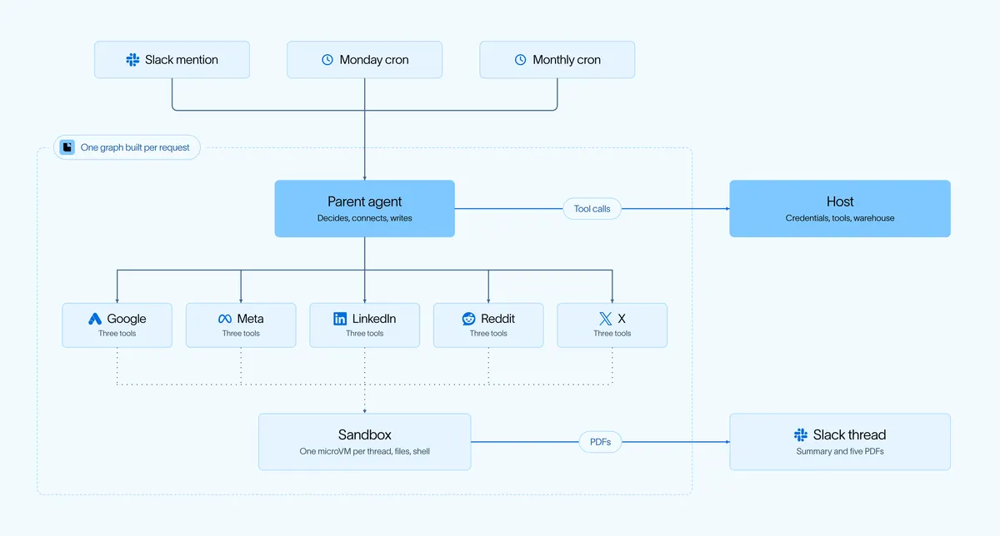
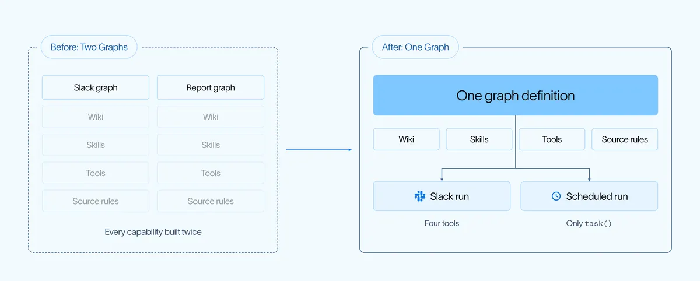

行銷 agent 半年佔 pipeline 兩成：模型管判斷，程式管數字
導讀原文：LangChain 官方部落格〈How We Built LangChain's Paid Media Agent〉——自家案例工程文，agent 已開源（open-paid-media-agent）
LangChain 把付費媒體 agent 當新人養：給電腦、資料與文件；context 分五層、計算交程式、一平台一子代理。六個月從 0 到佔行銷 pipeline 20%（自報）。

像對待新人：先給電腦，再給五層 context
出發點是一句話：「coding agent 是知識工作者」——讀檔、轉換資訊、跑分析、寫下來，跟人類分析師的日常同一套。
所以他們像對待新人一樣配備：LangSmith Sandbox 是隔離 microVM，32 GB 磁碟加 shell；pandas、DuckDB 做分析，openpyxl 試算表，WeasyPrint 加 Jinja2 產報告。
軟體之外還有文件：六個 skills、19 頁 wiki 與軟體一起烘進 sandbox snapshot，平均啟動時間省約 10 秒。
harness 用的是自家 Deep Agents，定位像作業系統：管檔案存取、程式執行與工作記憶，給模型規劃、派子代理與管 context 的工具；付費媒體的工具、skills 與業務知識都疊在這層之上。
naive 做法是把公司知識全塞進 system prompt——又長、每輪都貴、還會過期。他們的診斷：context window 才是瓶頸，很多推理失敗其實是 context 失敗。
所以 prompt 只當地圖：一句話角色加三個短節，其餘是指針；知識住在固定位置的檔案，agent 按任務取用。
| 層 | 放什麼 | 例子與數字 |
|---|---|---|
| System prompt | 角色與導航 | 一句話角色＋3 個短節，其餘是位置指針 |
| Skills | 怎麼做這份工作 | 6 個資料夾，執行時只先給標題與描述（漸進揭露） |
| Wiki | 這家公司的世界 | 19 頁：漏斗怎麼運作、每個 campaign 的目的、哪個來源擁有哪個數字、做過哪些決策與原因 |
| Live tools | 當下的事實 | 218 個呼叫：支出、設定、pipeline 每天變，請求時才抓 |
| 程式碼 | 不可漂移的規則 | 計算、日期窗、帳號對齊、硬規則；「不因單週表現不佳砍掉 top pipeline driver」的禁令寫在碼裡，模型無法覆寫 |
→ 可橫向滑動
畫界線的心法：「skill 要能在別家公司用，wiki 不能」——skill 裝可複製的方法，wiki 裝公司專屬脈絡（承 Karpathy 的 LLM wiki 模式與自家的 Wiki Memory）。
還有個意外收穫：agent 曾用現成的 playbook、campaign 資料與分析庫，答出團隊沒建過工作流的問題——workspace 的設計本身，就是 agent 設計的一部分。
一個 runtime，兩個入口
先看它做什麼：每週一對齊廣告平台數據與倉儲的 lead、pipeline，每平台出一份品牌 PDF——什麼變了、為什麼、下一步。
團隊在 thread 標記它追問；它也會照 playbook 與編碼判斷，提議新關鍵詞、調向、文案或新搜尋活動。
原本兩套 graph：週報是排程的 Deep Agent＋沙盒＋大模型＋PDF；Slack 求秒回，用輕量迴圈、便宜模型、唯讀、無沙盒。
這分工只活了五週：每個能力要做兩次、功能到兩端時間不一，Slack 吃不了附件、也答不了週報 PDF 的追問。

修正的認知：不是兩個產品，是同一份分析的兩個入口。一個 graph、每請求全新實例；排程只見 task()、每平台一個子代理，Slack 給較廣的讀取與倉儲工具。
每個 thread 有自己的沙盒與 checkpoint，每輪只看見需要的工具——狀態按請求隔離，而不是按產品隔離。
同一 runtime、不同能力檔——「同一個工廠可以給不同使用者不同的技能與權限」，託管在 LangSmith Deployment。
五課教訓，每課都有數字對帳
| 教訓 | 做法 | 數字與限定語 |
|---|---|---|
| 模型管判斷，程式管計算 | Python 抓數、對齊日期窗、套硬規則、刪多餘模型呼叫；模型只詮釋與建議 | 凍結測試集：舊版單份報告約 3.9M 輸入 token、1,112 秒、3 美元出頭 → 40x 便宜、13x 快（自報） |
| 每個指標定真值來源 | 平台管花費／曝光／點擊，倉儲管商機／pipeline；對不攏就保留限制，註明來源、日期窗與歸因模型 | Google 影音活動約 10% 花費在倉儲對不上（無關鍵詞可 join） |
| 工具按需發現 | Pipeboard MCP 的 200+ 廣告工具收進 search／read／run；倉儲給 describe＋分析查詢；固定工具與查詢介面並存（60 次 live 實測） | 唯讀目錄 38,000 token（6 月）→ 首輪約 12,000；同評審品質便宜 4x；目錄近 3 倍大、成本持平 |
| 隔離要自己設計 | live 資料比過三架構：獨立跑最差（難綜合）；選母＋每平台一子代理，各自報告位置與完成旗標；子代理僅 3 工具——讀 context、計算、渲染 | 兩個真實 bug：共享 done 旗標互卡、子代理自證 PDF 燒掉大量 token |
| 從分析到行動 | agent 提案，人類在審批卡核准，程式套用（細節見下段） | 人類控制是否執行；非付費媒體團隊只能問、不能改 |
→ 可橫向滑動
收尾兩課關於人與介面：只能分析的 agent 只是比較好的儀表板。所以提案走 Slack 審批卡——比對現值與擬議值、可編輯再核准，伺服器驗過 Slack user ID 才由程式套用，並回查平台確認生效。
介面也在演化：Slack 適合聚焦決策與追問；大量廣告組、批次編輯、多輪修訂這類複雜工作流，正移往圍繞 agent 打造的專用介面。
下一步是讓它更主動：持續盯表現、浮出值得注意的變化、提案實驗；更大的圖是把 GTM 各環的學習串成共享知識——campaign 參與度餵銷售跟進，pipeline 進度回饋下一輪投放。
（編輯觀點：五課裡最可複製的是第 1、2 課——把確定性從模型搬走、把真值來源講明白，任何產業的 agent 都用得上。）
（編輯觀點：成效由自家衡量、評審機制未揭露，且 LangChain 同時在賣 Deep Agents 與 LangSmith——數字當自家案例參考，不是第三方 benchmark。）
帶走三件事
prompt 當地圖，不當倉庫。知識住檔案，按任務取用。
確定性交給程式。算得準、可重現，模型只管判斷。
隔離不是免費的。子代理分了窗，邊界仍要自己畫。
同一主題的其他館藏
導讀為本站編輯內容（AI 摘解自原文與館藏重點，非官方文件）；引述語句出自原文，圖解與小標為編輯整理。成效數字（0→20%、CPL、40x／13x）皆為 LangChain 自家案例自報，無第三方驗證。內容經對照原文的獨立事實審查後發布。